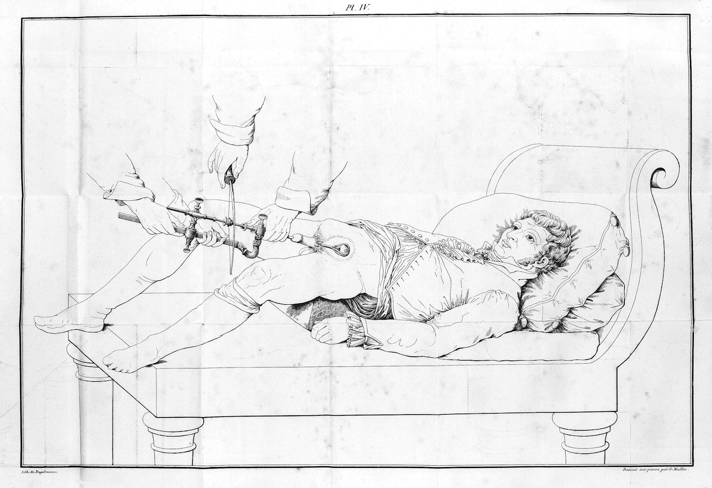

Bladder stone surgery in 1824: the nail-and-hammer myth
The version that circulates online involves a nail and a hammer. What actually happened was stranger, and harder: a surgeon working entirely by feel, inside a conscious man's bladder, through an instrument he had trained himself to use by picking up nuts in his coat pocket.
First, the claim
The story as it spreads online is that nineteenth-century men had a nail passed through the penis and then hammered to break up a bladder stone. That is not what happened. There was no nail and no hammer. The instrument was a lithotrite — a slim metal tube carrying a three-pronged claw that gripped the stone, with a drill passed down the centre of the tube to break it apart.
The distortion is understandable. The real procedure sounds implausible enough on its own.
What it replaced
Bladder stones are an ancient affliction, and for most of recorded history the only treatment was to cut for the stone: perineal lithotomy, an incision between the scrotum and the anus, straight through into the bladder. It had been performed since antiquity. It was fast, because it had to be — there was nothing to dull the pain — and it was frequently fatal. Survivors risked incontinence and fistula for the rest of their lives.
That is the operation depicted in nineteenth-century surgical atlases, and it is the operation lithotrity was invented to avoid.
The idea
The alternative was to leave the body closed and reach the stone along a passage that already existed. The urethra runs from the outside world directly into the bladder. If an instrument could be passed along it, the stone could be broken where it lay and the fragments allowed to wash out in the urine.
The concept had been worked out in stages. The Bavarian physician Franz von Paula Gruithuisen published the foundational study in 1813, after years of experiments on animals, cadavers, and to some extent on himself. Several French surgeons built competing instruments through the 1810s and 1820s. The one who made it work in a living patient was Jean Civiale.
The instrument
Civiale's lithotriteur was a long, thin metal tube ending in three curved grasping arms, opened and closed by screws at the external handle. The claws closed over the stone and held it. A steel drill was then introduced down the centre of the tube to bore into the stone until it broke.
Every part of this had to be done blind. There was no cystoscope — direct vision inside the bladder was still decades away. The surgeon knew where the stone was only through the resistance transmitted up the shaft of the instrument. Civiale trained his hands for it by walking around Paris with the lithotriteur, using it to pick up nuts inside his coat pocket.

13 January 1824
The first demonstration took place at Civiale's own home, in front of an audience of prominent physicians. The patient was a thirty-two-year-old identified in the accounts as Monsieur Gentil, who had lived with a bladder stone since the age of four.
Civiale lubricated the instrument with wax and oil and passed it through the urethra into the bladder. He located and gripped the stone without difficulty, then advanced the drill. When it struck, the crack was loud enough for the spectators to hear it across the room.
The procedure took about forty minutes. Civiale then flushed the bladder with warm water. Within minutes of getting up, the patient passed urine containing fragments of the stone he had carried for twenty-eight years.
Why a conscious patient accepted this
Ether anaesthesia was still twenty-two years away. Everything described above was done on a man who was awake and could feel all of it, and it was still the humane option. Set against a knife through the perineum with a real chance of death, forty minutes of instrumentation through the urethra was a trade patients took willingly.
This is the part that is easy to miss when the story is retold as a horror anecdote. Lithotrity was not barbarism. It was the first minimally invasive operation, and it was adopted because it killed far fewer people than the alternative.
What came next
The method spread quickly and attracted both imitators and fierce critics. The remaining weakness was the debris: fragments left in the bladder could seed new stones or obstruct the urethra on the way out. That was solved later in the century with litholapaxy, which added evacuation of the fragments in the same sitting. Later still, the lithotrite was combined with the cystoscope, and the surgeon could finally see what he was doing.
The line runs unbroken to the present. Modern extracorporeal shock wave lithotripsy breaks stones with focused acoustic waves from outside the body, with no instrument passed at all. The goal has not changed since 1824: fragment the stone, let the body pass it, and do not cut.
What this case teaches
Judging a historical procedure by how it feels to imagine is a mistake. Lithotrity sounds worse than the operation it replaced, and it was better by every measure that mattered to patients at the time. The relevant comparison for any intervention is never zero risk — it is whatever the alternative was.